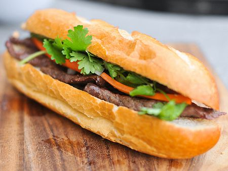

Delicious Bahn Mi Sandwich

Description
Iwent a little overboard when buying fish sauce for nuoc cham—two large bottles of Three Crabs. Not that it will go bad anytime soon, but with so much in the house, I feel a need to use it now. A marinade for beef seemed like an excellent choice.
Mix the fish sauce with sugar, shallots, garlic, and black pepper to make this sweet and salty marinade, which imparts a lot of flavor on thinly sliced sirloin tip.
FEATURED VIDEO How to Make a Nutella-Brie Grilled Cheese I originally intended to eat the beef wrapped in lettuce with vermicelli and nuoc cham, but the idea of using it for a banh mi-inspired sandwich instead was irresistible.
I topped toasted baguettes with the steak, along with pickled carrots and daikons, cilantro, and Sriracha mayonnaise, to make one killer sandwich.
Ingredients
- 2 pounds beef sirloin tip, sliced into 1/8-inch strips
- 1/3 cup fish sauce
- 4 tablespoons sugar
- 2 tablespoons finely minced shallot
- 6 cloves of garlic, minced
- 1/2 teaspoon ground black pepper
- Six 6 to 8-inch baguettes, sliced in half
- Sriracha mayonnaise
- Pickled carrots and daikons
- 1 bunch of cilantro, very coarsely chopped
Steps
- In a small bowl whisk together fish sauce, sugar, shallot, garlic, and black pepper. Place beef slices in a large resealable plastic bag, pour in marinade, seal bag and toss to coat well. Place in refrigerator and marinate at least 1 hour, or up to 24.
- Light one chimney full of charcoal. When all the charcoal is lit and covered with gray ash, pour out and spread the coals evenly over entire surface of coal grate. Set cooking grate in place, cover grill and allow to preheat for 5 minutes. Clean and oil the grilling grate. Grill beef over high heat until browned on both sides, about 2-3 minutes per side.
- Place baguette slices on grill, cut side down, and toast until browned, about 1 minute. Remove from grill and evenly divide beef on bottom slices of bread; top with pickled carrots, daikons, and cilantro. Spread sriracha mayo on top slices of bread, arrange on top of assemble sandwich and serve.